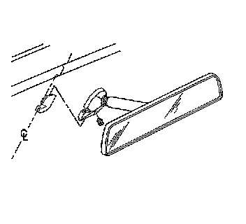

Inside Rearview Mirror Replacement (DD7, DD8)
Inside Rearview Mirror Replacement (DD7, DD8)
Removal Procedure

1. Remove the wire harness cover from the lighted rearview mirror, if equipped.

2. Remove the screw from the base.
3. Slide mirror off of the support.
4. Disconnect the electrical connector from the lighted rearview mirror, if equipped.
Installation Procedure
1. Connect the electrical connector to the mirror.
2. Slide the mirror onto the support base.
Notice: Refer to Fastener Notice (Fastener Notice) .
3. Install the screw to the base.
Tighten the screw to 1.8 N.m (16 lb in).
4. Secure the electrical harness cover to the rearview mirror.
5. Reposition the mirror.
6. Calibrate the mirror. Refer to Compass Calibration and Magnetic Variance (Description and Operation) .